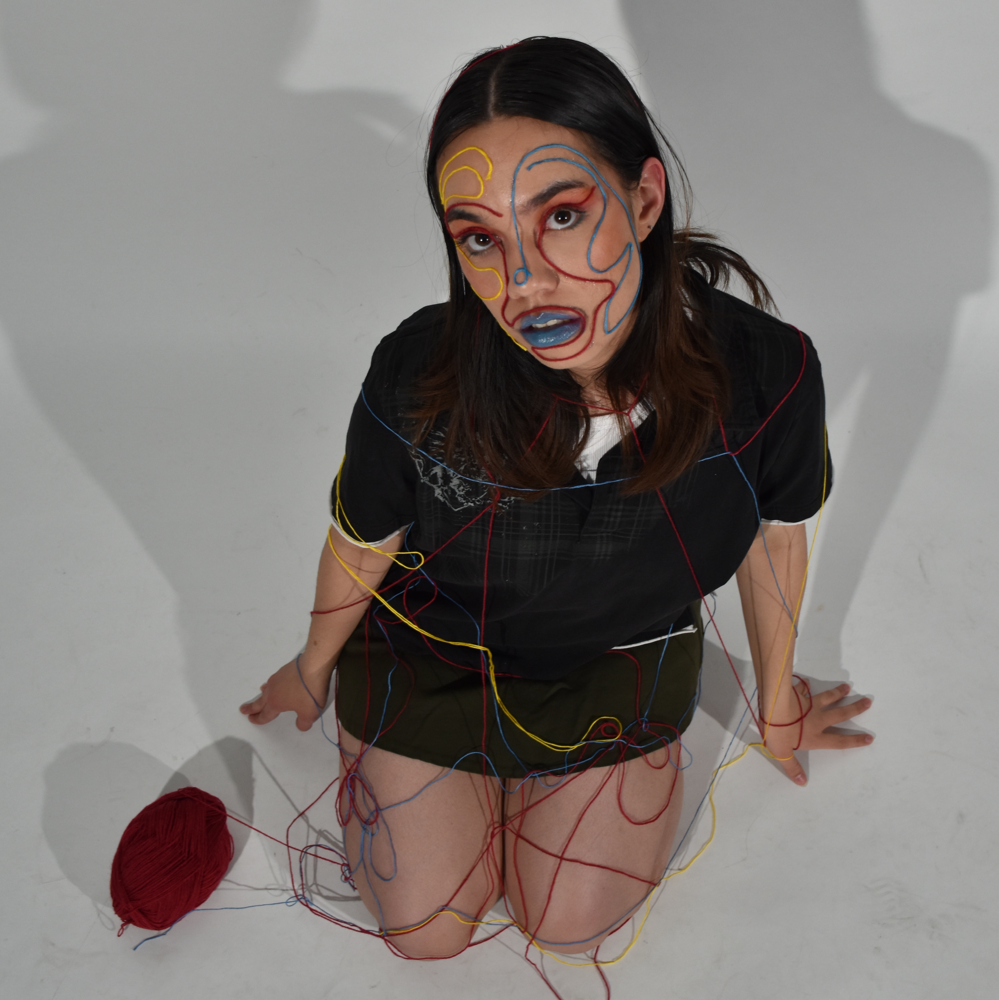
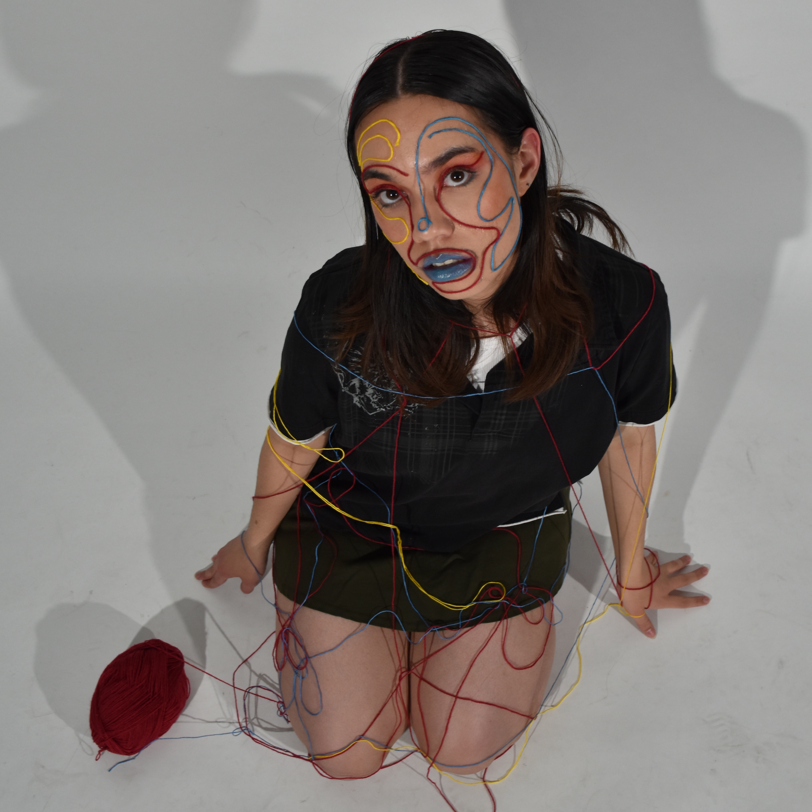
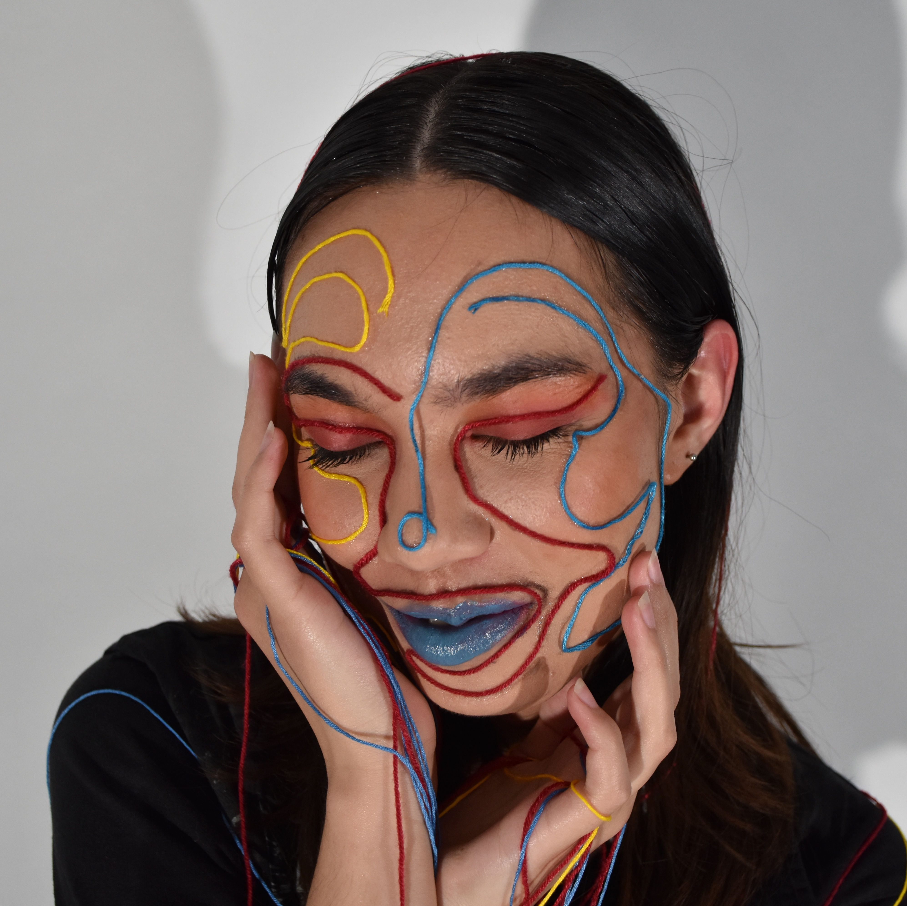
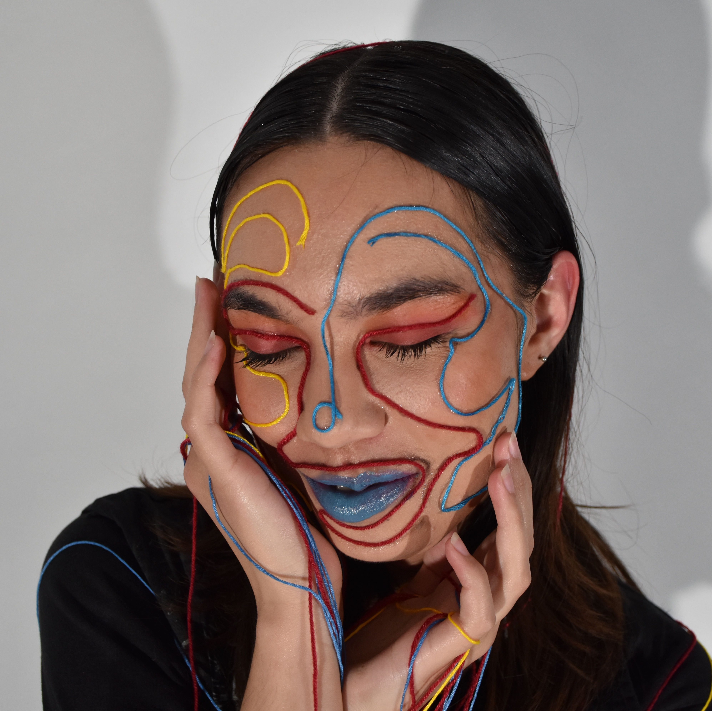

emma ferreira
she/her
This playful makeup look breaks away from the usage of typical cosmetic material by incorporating knitting threads. Using this material establishes the presence of experimental texture, pays tribute to childhood primary colours, and explores the narrative of makeup as a nonsensical, unconventional, and playful art form.


 

 
